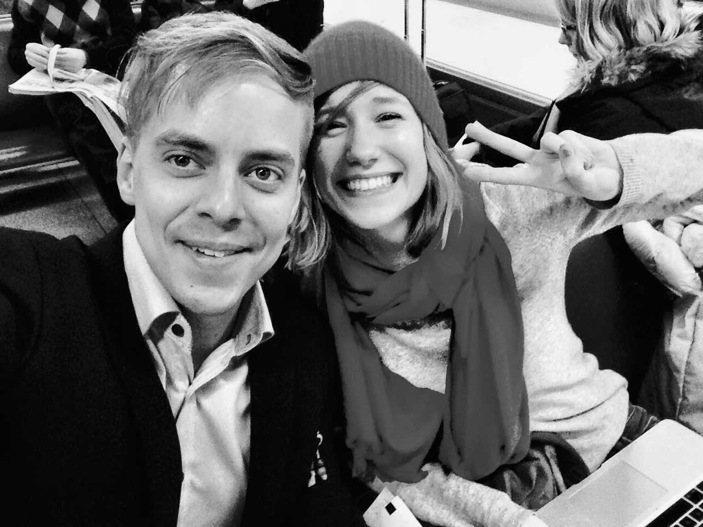
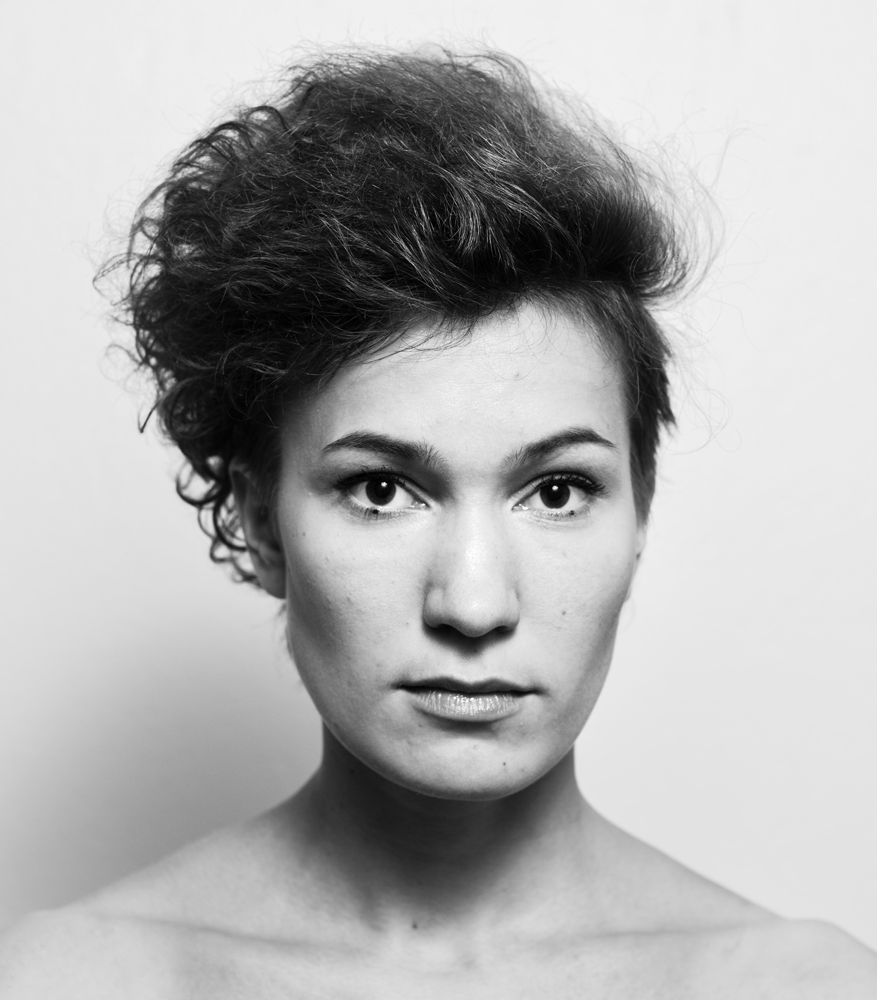

Sinulle, ohjelmoinnista kiinnostunut!
Lataa ilmainen Koodi2016-opas
Koodi2016 – ensiapua ohjelmoinnin opettamiseen peruskoulussa
Koodi2016-opas kertoo, mitä ohjelmointi on, miksi se on tärkeää – ja miten sitä voi opettaa peruskoulussa. Oppaan voi ladata ilmaisena näköisversiona alla olevasta linkistä.
Jos ylläoleva linkki ei toimi, kokeile vaihtoehtoisesti täältä.
Haluatko oppaan painettuna?
Kartoitamme parhaillaan, kuinka suuren toisen painoksen otamme painetusta oppaasta. Jos koulusi on kiinnostunut oppaan 140-sivuisesta hienosta painetusta versiosta, kertokaa siitä täällä. Pyrimme toimittamaan opasta koulullesi, kunhan rahamme vain riittävät painokuluihin.
Haluatko oppaan tekstiversiona?
Jos haluat lukea oppaasta versiota, jonka sisältöä on helppo leikata ja liimata ja tutkailla esimerkiksi älypuhelimella, pääset siihen käsiksi tämän sivun ylälaidan linkeistä. Tästä se alkaa.
Näin idea oppaasta sai alkunsa
Marraskuu, 2013. Satakunta ihmistä puputtaa cocktailpaloja ravintola Virgin Oilissa Helsingin keskustassa. Ollaan Elinkeinoelämän valtuuskunnan tilaisuudessa, jossa Eva julkaisee yhteiskunnan tuloeroja käsittelevän pamfletin.
Me – Linda Liukas ja Juhani Mykkänen – osallistumme kumpikin tuohon tilaisuuteen ja saamme idean omasta pamfletistamme: tehdään näkyväksi se, mitä ohjelmointi on, miksi se on tärkeää ja miksi se pitäisi tuoda peruskouluihin.
Ajatus tulee mieleen, sillä Lindalla on taustaa ohjelmoinnin opettamisesta: hän on perustanut ohjelmointia naisille opettavan Rails Girls -hankkeen ja työskennellyt koodausta verkossa opettavassa Codecademyssä.
Juhani on sekä it-puolen diplomi-insinööri että tiedon selkeän esittämisen ammattilainen. Hän on työskennellyt Helsingin Sanomille edelliset kuusi vuotta ja toiminut muun muassa Nyt-liitteen esimiehenä.
Toteamme, että meidän kahden olisi syytä lyödä päämme yhteen. Alkaisimme poliittisesti ja taloudellisesti riippumattomaksi iskujoukoksi ja pyrkisimme helppotajuisesti avaamaan päättäjille ja opettajille, miksi ohjelmointi on tärkeää Suomen ja suomalaisten kannalta.
Olemme lähestyneet vasta paria ensimmäistä rahoittajaa työllemme, kun opetusministeri Krista Kiuru linjaa julkisesti: ohjelmointi tulee peruskouluun seuraavassa, vuoden 2016 opetussuunnitelmassa.
Olemme onnessamme.
Alkuperäinen etäinen haaveemme ohjelmoinnin roolin nostamisesta kouluissa on toteutumassa, vaikka olemme ehtineet vasta uneksia.
Tässä vaiheessa päätämme kohdentaa työmme uudestaan: opas tuleekin suunnata suoraan sekä peruskoulun opettajille että opetussuunnitelmien laatijoille. Heille, joille ohjelmointi ei ole tuttua puuhaa, mutta jotka joutuvat silti painiskelemaan ohjelmoinnin opettamisen kanssa.
Mitä konkreettisemmaksi suunnitelma opettajille laaditusta käytännönläheisestä oppaasta muotoutuu, sitä innokkaammiksi myös yhteistyötahot käyvät. Mukaan lähtevät lopulta Liikenne- ja viestintäministeriö, Sitra, Teknologiateollisuus ry, Ohjelmistoyrittäjät ry, Startup-säätiö ja Tekniikan akateemiset TEK sekä yrityksistä it-talot Reaktor, Futurice ja Eficode, peleistään tunnetut Supercell ja Rovio sekä terveydenhuoltaja Diacor.
Nyt edessäsi on opaskirjanen, joka on ensiapupakkaus. Se on tarkoitettu jokaiselle, joka haluaa parilla istumalla ymmärtää hiukan lisää siitä, mitä ohjelmointi on ja mitä tietokoneiden avulla voi luoda.
Ennen kaikkea kohderyhmä ovat peruskoulun opettajat ja opetusalan päättäjät.
Kun tämän oppaan selaa läpi, ohjelmointi ei toivottavasti enää tunnu täysin vieraalta asialta. Lukija saa käsityksen siitä, miksi ohjelmoinnin opettamisen aloittaminen on elintärkeää ja millaisista asioista oppitunnit voivat koostua.
Tämä ei ole oppimateriaali tai opetussuunnitelma vaan johdatus aiheeseen ja lisätietoon.
Lopuksi pari sanaa oppaan riippumattomuudesta.
Ensinnäkin: Hankkeen tukijat eivät ole vaikuttaneet oppaan sisältöön. He ovat ainoastaan nähneet työmme tärkeänä ja halunneet mahdollistaa sen taloudellisella tuella.
Tukijat kuitenkin näkyvät oppaassa. Kunkin tahon edustaja kertoo, miksi juuri heidän mielestään ohjelmointiopetukseen panostaminen on tärkeää. Nämä puheenvuorot on toteutettu haastatteluina, ja ne löytyvät oppaasta Miksi tämä on tärkeää? -vinjetin alta. Kyseessä ei ole sponsorisanahelinä vaan olennainen osa oppaan sisältöä.
Oppaassa on myös pari kohtaa, jossa tietyn viestin välittämiseksi on lainattu jonkin tukijatahon edustajaa. Näissä tilanteissa sisältövalinnan olemme tehneet me.
Helsingissä 28.5.2014
Linda Liukas ja Juhani Mykkänen
Kirjoittajat: Juhani Mykkänen ja Linda Liukas
Kuvassa Juhani Mykkänen ja Linda Liukas matkalla kotiin Lontoosta Skills2014-konferenssista. He kävivät paikalla haastattelemassa Koodi2016-hanketta varten Britannian, Singaporen, Viron ja muiden edelläkäyvien maiden edustajia ohjelmoinnin opettamisesta.
Juhani Mykkänen (s. 1984) on it-alan diplomi-insinööri, luovan alan yrittäjä ja vapaa toimittaja. Hän on työskennellyt muun muassa Helsingin Sanomien Nyt-liitteen sekä Radio Helsingin esimiehenä ja HS:n internetin ja uuden tekniikan kolumnistina.
Linda Liukas (s. 1986) on perustanut ohjelmointia naisille opettavan Rails Girls -liikkeen, joka on levinnyt yli 200 kaupunkiin ympäri maailmaa. Hän on työskennellyt ohjelmoinnin verkkokursseja tarjoavassa Codecademyssä ja kirjoittaa ohjelmointia lapsille opettavaa Hello Ruby -kirjaa.
Ulkoasu: Salla Koivu
Graafikko Salla Koivu.
Koodi2016-oppaan painetun version ulkoasun on suunnitellut Salla Koivu (s. 1988). Koivu on vapaa graafikko, joka on työskennellyt myös Kylteri-lehden AD:na sekä suunnitellut lukuisia julkaisu- ja tapahtumailmeitä. Koivu on opiskellut Aalto-yliopistossa muun muassa markkinointia ja arkkitehtuuria.
Valokuvat: Maija Tammi
Valokuvaaja Maija Tammi.
Valokuvaaja Maija Tammi teki painettua Koodi2016-opasta varten tilaustyönä teossarjan Sekunti. Sarjan jokainen kuva koostuu 24 eri kuvasta. Valinta viittaa elokuvan tekniikkaan, jossa liikkeen illuusio luodaan näyttämällä 24 kuvaa sekunnissa. Tässä verkkoversiossa kuvat on koottu alle.
Maija Tammi (s. 1985) on suomalainen valokuvaaja ja taiteilija. Tammi on palkittu sekä Vuoden kuvajournalistina 2010 että Fotofinlandia-palkinnolla 2011. Hänen työnsä ovat olleet esillä näyttelyissä niin Suomessa, Ranskassa, Espanjassa kuin Yhdysvalloissa. Tällä hetkellä Tammi tekee taiteellista väitöskirjaa Aalto-yliopistossa Helsingissä.
Sekunnin tapa hajottaa kuva osiin liittyy myös ohjelmoinnilliseen ajatteluun (computational thinking): ohjelmoinnissa ongelma tulee osata jakaa pienempiin osiin, hahmottaa kaavamaisuuksia ja osata soveltaa havaintoja uudessa tilanteessa.
Teoksia on kuusi, ja ne löytyvät alta. Mukana ovat taiteilijan lyhyet saatesanat.

5379757
Kuvaaja Maija Tammi:
”Ihmiset käyttävät numeroita 0–9, tietokoneet vain numeroita 0 ja 1. Kuvat muodostavat binääriluvun 010100100001011010101101, joka vastaa kymmenjärjestelmän lukua 5379757.”
» Katso kuva suurikokoisena

Välipala
Kuvaaja Maija Tammi:
”Ohjelmoijankin pitää syödä. Kuvassa on avokado.”
» Katso kuva suurikokoisena

Hahmottaminen
Kuvaaja Maija Tammi:
”Miten paljon ja millaista informaatiota ohjelmoija tarvitsee kokonaisuuden hahmottamiseen? Kuvassa
on pölynimuri.”
» Katso kuva suurikokoisena

Osissa
Kuvaaja Maija Tammi:
”Jos kokonaisuus ei ole ymmärrettävä, ongelma on usein jaettavissa osiin. Kuvassa ovat tietokoneen sisälmykset.”
» Katso kuva suurikokoisena

Päämäärä
Kuvaaja Maija Tammi:
”Leikkivä lapsi päättää, mihin juna menee ja millaista rataa pitkin. Samoin tietokoneelle on kerrottava, mitä sen haluaa tekevän. Kuvassa on leikkijunan veturi ja junarataa.”
» Katso kuva suurikokoisena

Soveltaminen
Kuvaaja Maija Tammi:
”Kuvassa on kana. Aiemmista kuvista opitun kaavan soveltaminen nopeuttaa kuvan esittämän asian hahmottamista.”
» Katso kuva suurikokoisena